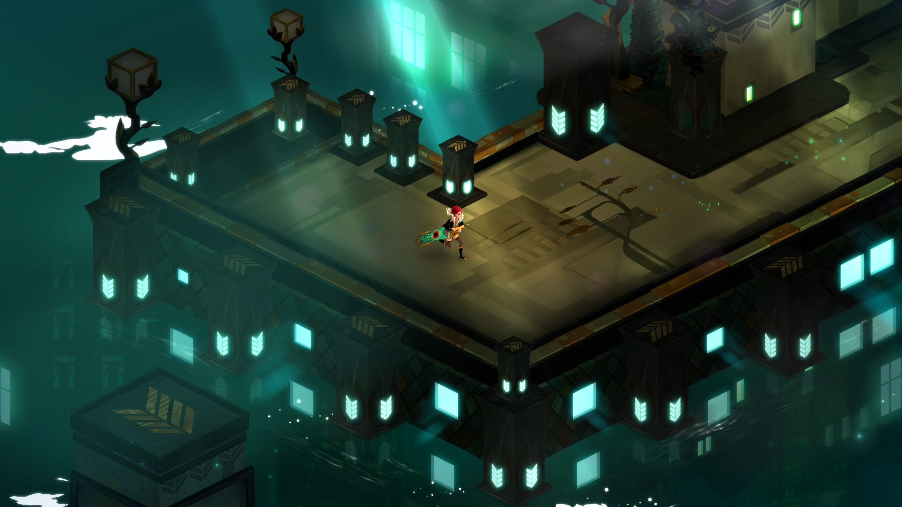
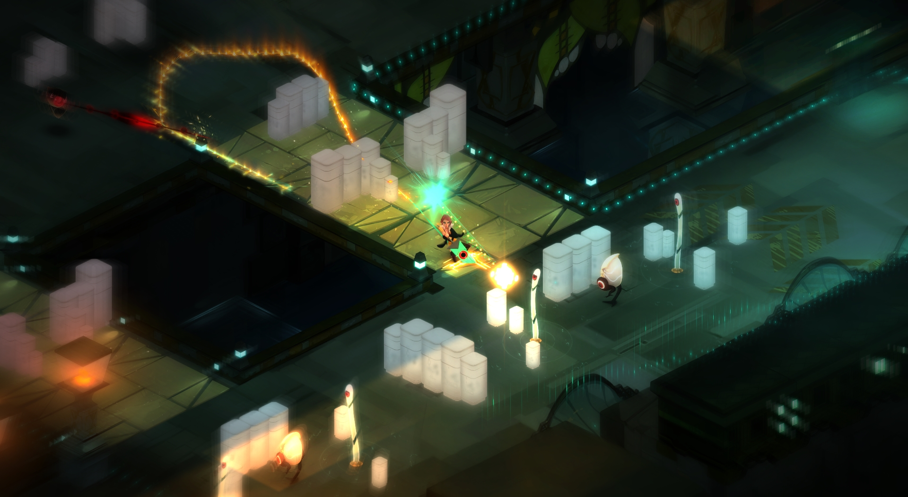
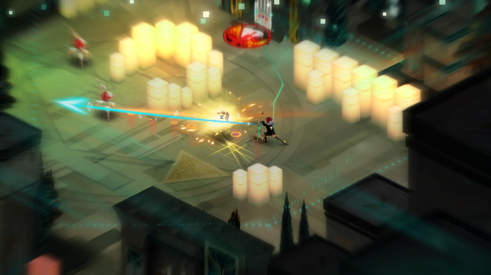

Після проходження кожної чудової гри я завжди шукаю інші ігри, створені тією ж студією.
Іноді наступна гра може відрізнятися від попередньої.
Нам зазвичай хочеться щоб наступна гра була подібною до тої, що ми пройшли, але нерідко буває, що розробники хочуть спробувати щось нове і результат може виявитися як кращій так і гірший.
Якою виявилася наступна гра від творців Bastion?
Якщо вам кортить дізнатись чи отримає ця гра рекомендацію, то можу відразу сказати, що отримає і можете сміливо купувати. Однак дочитайте до кінця щоб дізнатись чому саме.
По-перше, зверніть увагу на те, що у порівнянні з Bastion жанр гри краще описати як тактична-рольова з елементами стратегії гра радше ніж екшн-рольова. Звучить незрозуміло, але дозвольте мені пояснити. Стратегічна складова полягає у тому, що ви можете спланувати свої дії на певну кількість ході наперед і виконати іх до того як ворог зможе відреагувати. Спочатку це мене трішки засмутило бо я не шанувальник такого жанру, але після першого ж бою я зрозумів, що боятися нічого і це не зовсім не сповільнює темп гри і навіть додає глибини ігроладу.

Пам'ятаєте меч на малюнку - це ваш меч. Він має чотири активні властивості кожну з яких ви зможете відкрити у певний момент, коли досягнете певного рівня або переможете боса. Їх можна видозмінювати додаючи модифікації. Його вигляд навіть змінюється що більше ви його прокачуєте. Крім покращень в нього можна встановити обмежувачі, що роблять гру складнішою, але дозволяють підняти ваш рівень швидше. Просто так бити ним ворогів не можна, а лише використовувати його спеціальні можливості. Робити це можна як у режимі планування так і у реальному часі. До речі цей меч називається Транзистор.

Ідея ігрового світу дуже цікава... Я і сам іноді замислювався над тим як могло б виглядати життя всередині комп'ютерної системи. У грі дуже гармонійно поєднаний реальний і комп'ютерний світи. Візуальний стиль відразу ж нам показує, що у цьому світі не все добре і що в ньому присутні проблеми притаманні будь-якому суспільству. Пригнічений настрій дуже точно переданий завдяки малюнкам ручної роботи. Разом із музикою та голосом за кадром вони створюють сильну емоційну прив'язаність до головної героїні, що в певний момент перестає бути просто набором пікселів... Ні, то не сльоза, просто піщинка до ока потрапила...

Мені не прийшло на думку сказати щось негативне про цю гру бо вона жодного разу не викликала у мене таких почуттів. Я відчув, що гра була створена з любов'ю. І так, певно, почуваються сотні тисяч геймерів, що лишили позитивні відгуки у Steam. Сподіваюсь, що наступна їх наступна гра буде такою ж чудовою. І навіть якщо це буде зовсім інший жанр я готовий спробувати, бо вони заслужили мою довіру. Заслужили її тим, що створили ігри, у які я хочу і можу грати знову.
Перейти до обговорення у групі
Реклама